노트
어휘: 다음 어휘를 노트에 기록하세요. 학습 활동을 완료하면서 어휘에 관련된 정의와 핵심 용어를 채워 넣으세요.
- 보강 간섭
- 상쇄 간섭
- 중첩
- 마디
- 배
- 루프
도입
파동의 특성을 알았으니, 같은 매질에서 두 파동이 상호작용할 때 어떤 일이 일어나는지 살펴봅시다. 이를 위해 상황을 단순화하여 각 파동의 단일 파장만 고려해 보겠습니다. 이 단일 파장을 "펄스"라고 합니다.
물에 무언가를 떨어뜨린 후 파동이 퍼져 나가는 것을 본 적이 있나요? 두 물체를 서로 가까이 떨어뜨리면 어떻게 될까요? 각 물체에서 나온 파동이 서로 상호작용할까요? 이것이 이 학습 활동에서 더 자세히 조사할 질문입니다.

파동의 간섭
짐작했겠지만, 펄스가 서로를 통과하는 짧은 시간 동안 서로 상호작용하며, 이 상호작용을 간섭이라고 합니다.
탐구해 보세요!
다음 영상은 두 파동이 간섭하는 모습을 보여줍니다.
파동의 간섭은 두 개 이상의 파동이 같은 매질에서 동시에 상호작용할 때 발생합니다.
정의
진폭은 간섭에서 사용되는 중요한 개념입니다. 진폭은 평형선으로부터의 거리입니다. 파동이 평형선 위에 있으면 양의 진폭을 가지고, 평형선 아래에 있으면 음의 진폭을 가집니다.
이제 간섭의 두 가지 유형인 보강 간섭과 상쇄 간섭을 공부해 봅시다.
보강 간섭
보강 간섭은 마루와 마루가 만나거나 골과 골이 만날 때 발생합니다. 이 경우, 두 펄스가 합쳐져서 매우 큰 마루(초마루)나 매우 큰 골(초골)을 형성합니다. 다음 두 그림은 보강 간섭의 예시를 보여줍니다: 첫 번째는 마루, 두 번째는 골의 경우입니다.
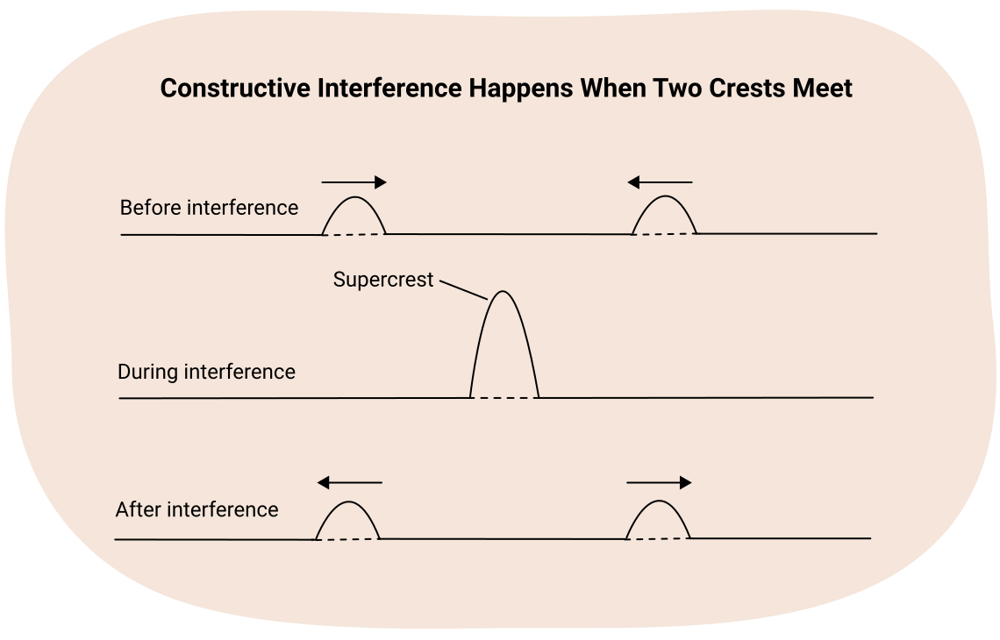
두 그림 모두 펄스가 만나기 전과 간섭하는 동안의 모습을 보여줍니다. 이 시점에서 두 펄스는 순간적으로 서로 중첩됩니다. 초마루/초골의 진폭은 두 개의 작은 펄스의 진폭의 합이라는 점에 주목하세요. 원래 펄스의 두 진폭을 더하면 중첩된 진폭을 구할 수 있습니다. 또한 앞의 그림에서 두 마루는 서로를 통과한 후 변하지 않으며, 다음 그림에서 보듯이 두 골의 경우도 마찬가지입니다.
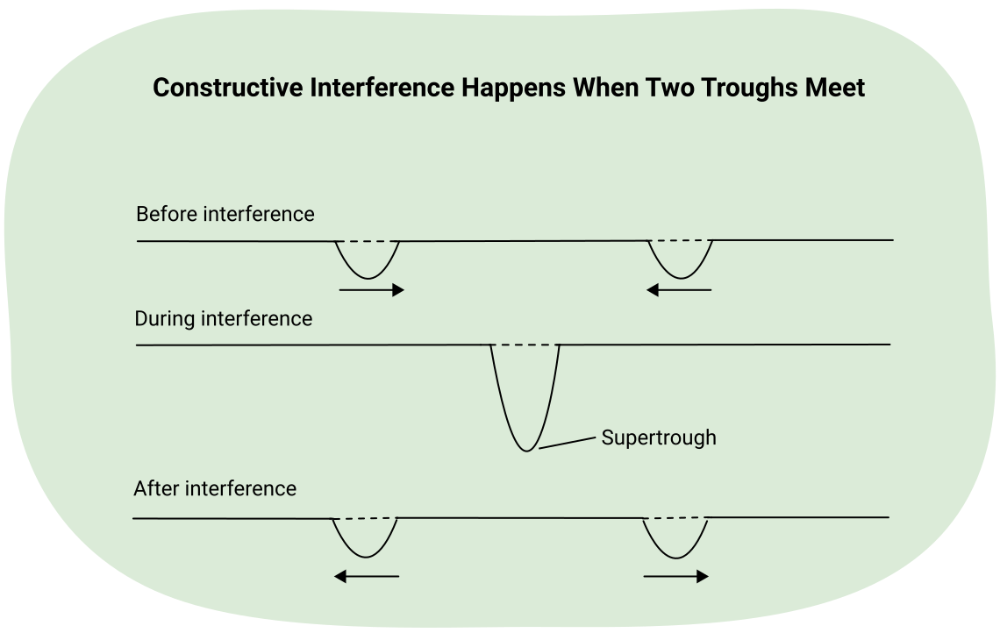
상쇄 간섭
상쇄 간섭의 경우, 상황이 매우 다릅니다.
탐구해 보세요!
다음 영상은 상쇄 간섭의 시연입니다.
이 경우 마루가 골 위에 중첩됩니다. 간섭 중에 두 개가 만나면, 마루는 매질의 입자를 위로 끌어당기려 하고 골은 아래로 끌어당기려 합니다. 두 작용이 서로 상쇄되어 결과 파동의 진폭은 어느 한쪽 펄스보다 작아집니다. 다음 그림은 같은 진폭을 가진 마루와 골이 간섭하는 모습을 보여줍니다.
이 경우 보강 간섭 예시에서 완전히 명확하지 않았던 두 가지를 관찰할 수 있습니다. 이 경우는 펄스가 서로를 통과하며 반사되지 않는다는 것을 분명히 보여줍니다. 간섭 중에 양의 진폭과 음의 진폭이 합쳐져 0이 되므로, 진폭은 0이 됩니다. 다음 그림에서 이를 확인할 수 있습니다.
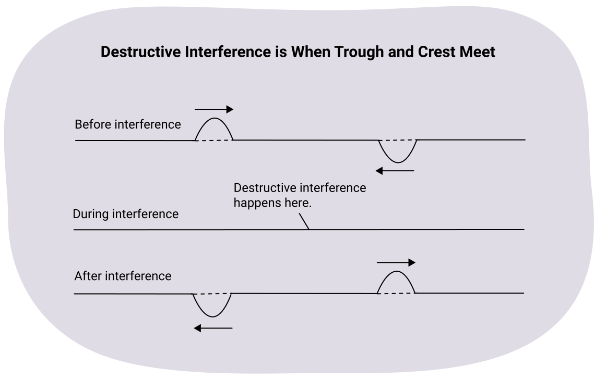
중첩의 원리
매질의 어느 지점에서든, 간섭하는 두 파동의 결과 진폭은 각 파동의 개별 변위의 대수적 합입니다.
다음 그림을 살펴보면서 과정을 더 잘 이해해 보세요. 매질의 임의의 입자의 변위를 구하려면, 각 개별 파동의 대수적 진폭을 더하세요. 평형 위의 변위(마루에서)는 양수이고 평형 아래의 변위(골에서)는 음수라는 점을 기억하세요.
과정을 살펴보면, 중첩된 파동의 왼쪽에서는 직사각형 마루의 변위가 양수이지만 삼각형 골의 변위는 없습니다. 이는 결과 변위가 양수이며 직사각형 마루의 변위와 같다는 것을 의미합니다. 중첩된 파동의 오른쪽 끝에서는 두 변위가 크기는 같지만 방향이 반대입니다.
이 지점에서 서로 상쇄되어 변위가 없습니다. 두 끝 사이에서 직사각형 마루의 양의 변위는 항상 삼각형 골의 음의 변위보다 크기가 큽니다. 이로 인해 두 끝 사이의 각 점에서 더 작은 양의 변위가 생깁니다. 이후 펄스는 변하지 않고 서로를 통과합니다.
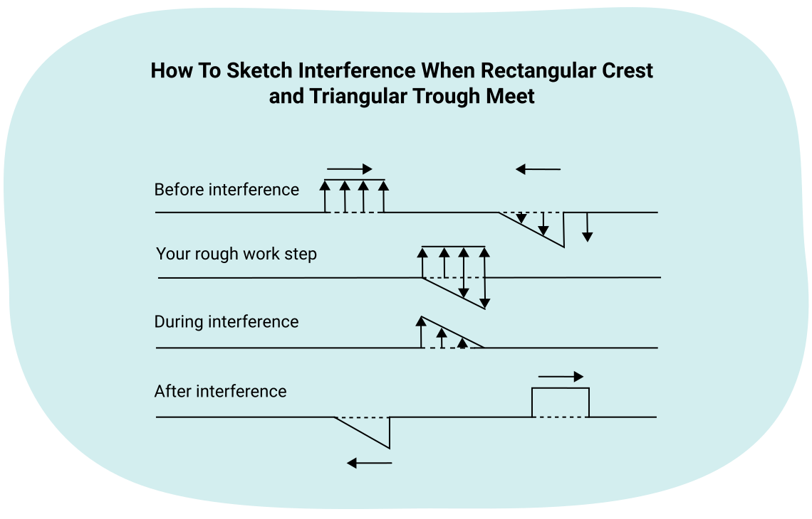
예제: 중첩의 원리
중첩의 원리를 사용하여, 다음 그림에 표시된 순간의 매질 입자의 결과 변위를 구하세요. 풀이 예시와 비교하여 이해도를 확인하세요.
두 펄스가 겹치거나 중첩되는 부분만 고려하면 됩니다. 매질의 일부에 하나의 펄스만 있을 때, 그 펄스는 변하지 않습니다. 이 예제에서는 가운데에서만 중첩되므로, 진폭을 더하면 다음과 같은 결과가 됩니다. 관찰할 수 있는 것은 실선뿐이며, 점선은 보이지 않습니다.
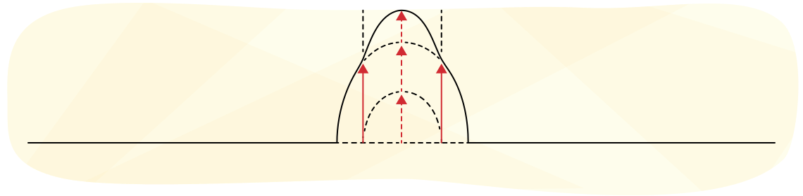
노트
노트를 사용하여 다음 문제를 풀어 보세요. 풀이 예시와 비교하여 이해도를 확인하세요.
- 중첩의 원리를 사용하여, 다음 그림에 표시된 것처럼 두 펄스의 수평 중간점이 겹칠 때 매질 입자의 결과 변위를 구하세요.
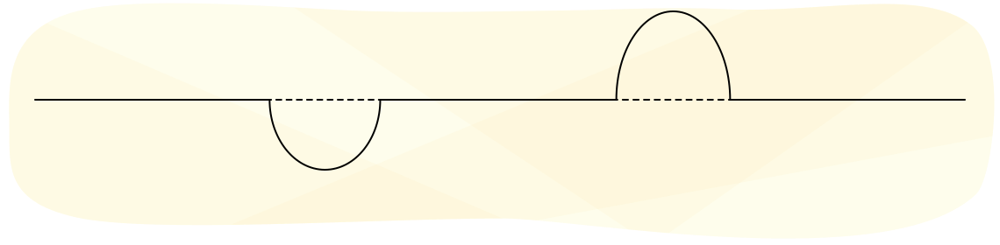
중첩의 원리를 사용하여 두 펄스가 겹치는 중간점의 결과는 다음 그림과 같습니다.
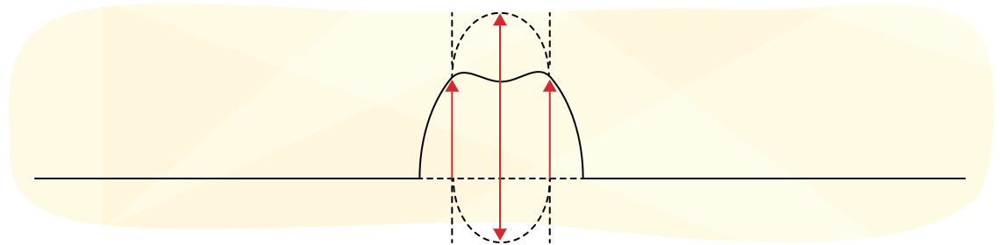
맥놀이
거의 동일한 두 진동수를 함께 울리면 이상한 일이 일어납니다. 무슨 일이 일어나는지 알아보기 위해, 동일한 두 소리굽쇠를 가져와 하나의 갈래에 고무줄을 감아 보세요. 고무줄은 소리굽쇠의 진동수를 약간 낮춥니다. 하나의 소리굽쇠만 울리면 일정한 소리의 단일 진동수를 들을 수 있습니다. 두 개를 함께 울리면, 규칙적인 시간 간격으로 소리의 세기가 극적으로 변하는 것을 들을 수 있습니다. 일반적으로 소리는 크게-작게-크게 패턴으로 들립니다. 이 맥동 패턴은 약간 다른 진동수를 가진 두 소리굽쇠의 보강 간섭과 상쇄 간섭을 나타냅니다.
직접 해 보세요!
다음 대화형 시뮬레이션에서 보강 간섭과 상쇄 간섭의 현상을 시뮬레이션해 봅시다.
시뮬레이션에서 440 Hz와 441 Hz의 조합을 재생하면 "우—우—우—우"와 같은 소리를 듣게 됩니다. 들리는 "우" 소리를 맥놀이라고 합니다. 시뮬레이션의 세 가지 진동수는 440 Hz, 440.5 Hz, 441 Hz입니다.
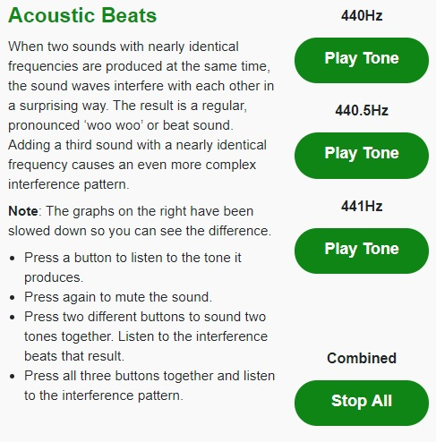
Start (새 창에서 열림)왜 맥놀이가 들리나요?
이 맥놀이는 두 음원의 음파가 위상이 맞았다가 어긋났다가 하기 때문에 발생합니다(파동이 더 이상 서로 동기화되지 않음). 위상이 맞을 때는 보강 간섭으로 소리가 커지며 "우" 소리를 들을 수 있습니다. 위상이 어긋나면 상쇄 간섭으로 소리가 매우 희미해집니다.
맥놀이 진동수란 무엇인가요?
초당 들리는 맥놀이의 수(맥놀이 진동수)는 두 소리의 진동수 차이와 같습니다.
왜 맥놀이가 생기나요?
"우" 소리를 맥놀이라고 하며, 주어진 시간 동안 발생하는 맥놀이의 수를 맥놀이 진동수라고 합니다. 이 맥놀이는 두 소리굽쇠의 음파가 위상이 맞았다가 어긋났다가 하기 때문에 발생합니다. 위상이 맞으면 간섭으로 소리가 커지며, 다음 그림에서 보듯이 짧은 시간 동안 두 개의 맥놀이가 형성됩니다. 간단하게 하기 위해, 시간이 1초보다 약간 넘는다고 가정합니다.
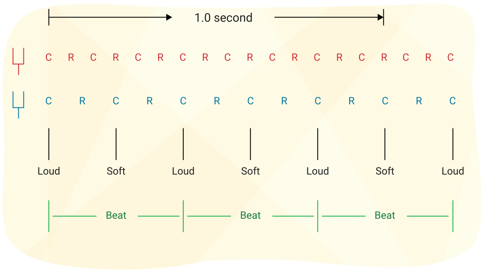
참고: 사용된 진동수는 사람이 들을 수 있을 만큼 높지 않지만, 이 그림은 맥놀이 진동수의 개념을 설명하기 위해 제공됩니다.
참고: 그림에서 위쪽 음원은 1초 동안 8개의 밀(C)과 소(R)를 보냅니다. 그 진동수는 8.0 Hz입니다. 아래쪽 음원의 진동수는 5.5 Hz입니다. 진동수의 차이는 2.5 Hz입니다.
두 음파가 퍼져 나가면서, 그림에서 보듯이 때로는 보강 간섭으로 큰 소리를, 때로는 상쇄 간섭으로 작은 소리를 만듭니다. 사용된 1초 간격에서 두 파동은 2.5개의 맥놀이를 만듭니다.
맥놀이 진동수 방정식
맥놀이 진동수 방정식은 다음과 같습니다:
공식
여기서:
는 맥놀이 진동수
and 는 두 소리굽쇠(또는 기타 음원)의 진동수입니다.
두 개의 수직선은 절댓값을 의미합니다. 맥놀이 진동수가 양수여야 함을 나타냅니다. 그림에서 보듯이 두 진동수의 차이가 음수이면, 음수 부호를 없애고 양수로 만들면 됩니다. 이 문제를 피하려면 항상 높은 진동수에서 낮은 진동수를 빼면 됩니다.
예제: 소리굽쇠의 진동수
약간 다른 진동수를 가진 두 소리굽쇠를 함께 울립니다. 하나는 256 Hz이고 다른 하나는 253 Hz입니다. 두 개를 함께 울립니다.
- What는 맥놀이 진동수? 준비가 되면 풀이 보기 버튼을 눌러 자신의 생각과 비교하세요.
- 256 Hz 소리굽쇠를 제거하고 새 소리굽쇠로 교체합니다. 이제 두 소리굽쇠를 함께 울리면, 5.0초 동안 10개의 맥놀이가 들립니다. 가중된 소리굽쇠의 새 진동수는 얼마인가요? 준비가 되면 풀이 보기 버튼을 눌러 자신의 생각과 비교하세요.
5.0초 동안 10개의 맥놀이 = 초당 2개의 맥놀이. 따라서 fb = 2 Hz. 따라서 두 번째 소리굽쇠는 253 Hz 소리굽쇠와 2 Hz 차이가 나야 합니다. 255 Hz 또는 251 Hz의 두 가지 가능성이 있습니다. 두 답 모두 유효하며 하나를 제거할 방법은 없습니다.
노트
노트에서 다음 문제를 스스로 풀어 보세요.
- 소리굽쇠 1(420.0 Hz)을 소리굽쇠 2와 함께 울리면 10.00초 동안 정확히 20개의 맥놀이가 셉니다. 소리굽쇠 2를 소리굽쇠 3(426.0 Hz)과 함께 울리면 3.00초 동안 정확히 12개의 맥놀이가 감지됩니다. 소리굽쇠 2의 진동수는 얼마인가요? 이유를 설명하세요.
주어진 값:
구하는 값:
공식:
풀이:
소리굽쇠 1과 2 사이의 맥놀이 진동수는 2.000 Hz입니다. .
따라서 or .
소리굽쇠 2와 3 사이의 맥놀이 진동수는 4.00 Hz입니다. .
or
공통된 유일한 선택지는 422 Hz이므로
결론:
소리굽쇠 2의 진동수는 422 Hz입니다.
- 소리굽쇠 1(256 Hz)을 소리굽쇠 2(255 Hz)와 함께 울립니다. 맥놀이 진동수는 얼마인가요?
주어진 값:
구하는 값:
공식:
풀이:
(*참고: 절댓값 기호는 음수가 있으면 음수 부호를 제거한다는 의미입니다.)
결론:
맥놀이 진동수는 1.00 Hz입니다.
- 소리굽쇠 1(원래 256 Hz)에 고무줄을 달아 진동수를 낮춥니다. 소리굽쇠 2(255 Hz)와 다시 울리면 6.00초 동안 정확히 12개의 맥놀이가 생깁니다. 소리굽쇠 1의 새 진동수는 얼마인가요? 이유를 설명하세요.
주어진 값:
구하는 값:
공식:
풀이:
주어진 맥놀이 진동수는 조정된 소리굽쇠에 대한 것입니다.
or
소리굽쇠 1에 고무줄을 달아 새 진동수를 얻었다는 것을 알고 있습니다. 이전 학습 활동에서 "고무줄은 소리굽쇠의 진동수를 약간 낮춥니다"라는 것을 알았습니다.
따라서 새 진동수는 원래보다 낮아야 합니다.
결론:
소리굽쇠 1의 새 진동수는 253 Hz입니다. 새 진동수는 원래 진동수보다 낮아야 하고, 맥놀이 진동수에 따르면 소리굽쇠 1과 2는 2 Hz 차이가 나기 때문입니다.
직접 해 보세요!
줄 위의 파동 시뮬레이션을 시도하기 전에 다음 지침을 읽으세요:
- 왼쪽 상단에서 oscillate(진동)를 선택하고, 오른쪽 상단에서 fixed end(고정단)를 선택하세요.
- 하단에서 진동수를 2.00 Hz로 설정하세요.
- 감쇠를 없음으로 설정하세요.
- 장력을 높음과 낮음의 중간으로 설정하세요.
슬로우 모션을 선택하면 무슨 일이 일어나는지 관찰하기 더 쉽습니다. 다음 시뮬레이션을 시작하고 관찰하세요. 파동이 줄을 따라 이동하지 않고 위아래로 흔들리고 있나요?
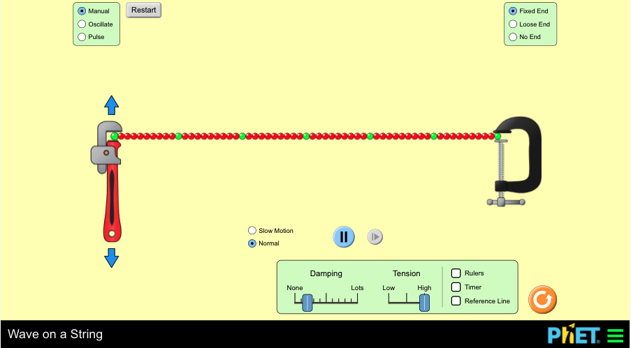
Start (Opens in a new window)정상파
파동, 특히 음파와 빛의 파동은 매우 빠르게 이동하여 연구하기 어렵습니다. 이 절에서는 파동의 성질을 훨씬 쉽게 관찰할 수 있는 방법을 배우게 됩니다. 이 방법은 반대 방향으로 파동을 보내는 두 개의 동일한 파원을 사용합니다. 이 간섭 패턴이 작동하려면 두 파동의 파장과 진폭이 동일해야 합니다. 이 방법으로 만들어진 파동 패턴은 파동의 움직임이 없고 입자의 움직임만 있는 것처럼 보이기 때문에 정상파라고 합니다.
직접 해 보세요!
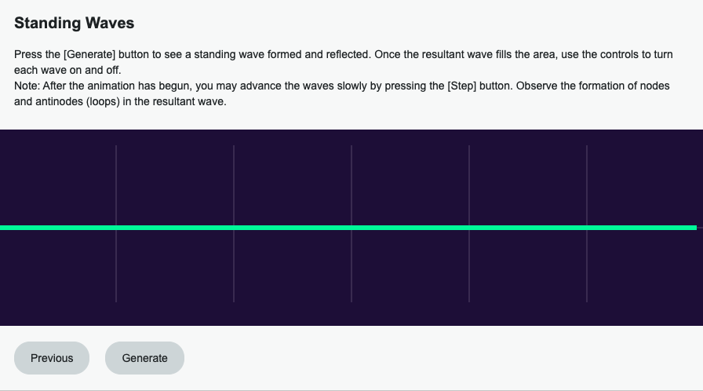
Start (새 창에서 열림)첫 번째 그래프에서 두 파동(빨간색과 파란색)이 같은 매질에서 반대 방향으로 이동합니다. 이어지는 그래프들은 빨간색과 파란색 파동이 A점에서 I점(또는 그 반대)으로 이동할 때 일어나는 일을 보여줍니다.
매질에서 반대 방향으로 이동하는 두 개의 동일한 파동이 간섭할 때, 매질에서 전혀 움직이지 않는 점들이 있습니다. 이 점들을 마디라고 합니다. 마디는 매질에서 마루와 골이 만나는 위치에 발생합니다.
앞에서 배웠듯이, 동일한 파동의 상쇄 간섭은 변위를 전혀 만들지 않으며 입자는 정지 상태를 유지합니다. 마디점들 사이의 중간에는 배라고 불리는 점들이 있습니다. 이 점들은 골과 골이 만나 초골을 형성하고, 마루와 마루가 만나 초마루를 형성하는 위치에 발생합니다. 결과적인 보강 간섭은 파원의 변위보다 두 배 큰 변위를 만듭니다.
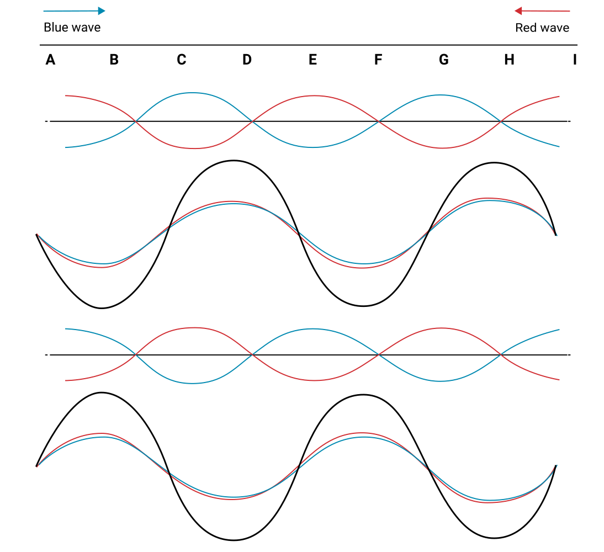
정상파를 관찰하면, 마디는 정지 상태를 유지하고 절대 움직이지 않으며, 다른 모든 점들은 파동의 운동에 수직으로 앞뒤로 움직이는 것을 알 수 있습니다. 배는 입자의 변위가 가장 큰 곳에 위치합니다.
정상파 시뮬레이션
매질에서 반대 방향으로 이동하는 두 개의 동일한 파동이 간섭할 때, 매질에서 전혀 움직이지 않는 점들이 있습니다. 다음 그림에서 보듯이 이 점들을 마디(N)라고 합니다. 마디점들 사이의 중간에는 그림에서 보듯이 배라고 불리는 점들이 있습니다. 다음 정상파 그림에는 4개의 마디, 6개의 배, 3개의 루프가 있습니다.
정상파의 더 유용한 성질 중 하나는 한 마디에서 다음 마디까지의 거리(하나의 루프)가 반파장이라는 사실입니다. 이 점들이 움직이지 않기 때문에 파장을 측정하기가 매우 쉽습니다.
하나의 루프 폭은 반파장이므로, 두 루프의 폭은 한 파장이 됩니다:
1 loop = λ/2
2 loops = λ
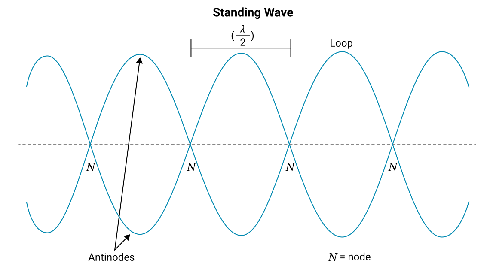
예제 1
정상파에서 연속된 두 마디 사이의 거리는 20.0 cm입니다. 파원의 진동수는 15 Hz입니다. 파동의 속력을 구하세요. 준비가 되면 풀이 보기 버튼을 눌러 자신의 생각과 비교하세요.
연속된 두 마디 사이의 거리는 하나의 루프입니다. 하나의 루프는 반파장( ) .
and 입니다. 이제 파동의 기본 방정식을 사용하여 속력을 구합니다:
파동의 속력은
예제 2
진동하는 파원이 다음 그림에 표시된 것처럼 줄에 정상파를 만듭니다. 파원은 위아래로 움직이며 5.5초 동안 22번의 진동을 완료합니다. 첫 번째 마디에서 여섯 번째 마디까지의 거리는 6.0 m입니다. 파동의 속력을 구하세요. 준비가 되면 풀이 보기 버튼을 눌러 자신의 생각과 비교하세요.
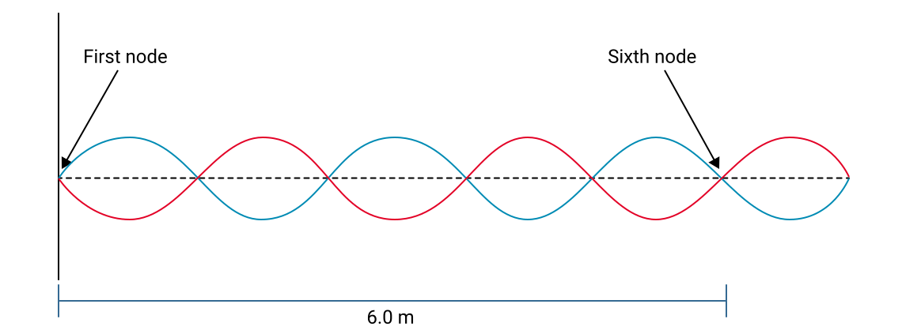
첫 번째와 여섯 번째 마디 사이에 5개의 루프가 있습니다. 5 루프 = 2.5 λ = 6.0 m
진동수를 구하기 위한 공식은 여기서 N = 진동 횟수이고 t = 시간입니다.
이제 파동의 기본 방정식을 사용하여 파동의 속력을 구합니다.
파동의 속력은 9.6 m/s입니다.
노트
노트에서 직접 풀어 보세요.
- 진동수 30.0 Hz의 파원으로 길이 12 m인 줄에 파동을 만듭니다. 파동이 줄의 한 고정단에서 다른 고정단까지 이동하는 데 0.20초가 걸립니다. 파동의 속력은 얼마인가요? 파장은 얼마인가요? 줄의 정상파에 루프가 몇 개 있나요?
주어진 값:
구하는 값:
공식:
풀이:
세 가지 별도의 질문이 있습니다.
먼저, 길이와 시간을 사용하여 파동의 속력을 구합니다.
그런 다음, 파동의 기본 방정식을 사용하여 파장을 구합니다.
그런 다음 하나의 루프의 길이가 반파장이라는 점에 주목합니다.
줄의 길이는 12 m이고, 각 루프의 길이는 입니다.
따라서 12개의 루프가 있습니다.
결론:
파동의 속력은 이고, 파장은 2.0 m이며, 줄에 12개의 루프가 있습니다.
(답은 유효 숫자 2자리로 나타냅니다. d가 유효 숫자 2자리이기 때문입니다. 속력은 과학적 표기법으로 나타내야 합니다. "60"은 유효 숫자 1자리뿐이므로 로 써서 유효 숫자 2자리임을 나타냅니다.)
- 반대 방향으로 6.0 m/s로 이동하는 두 파동이 0.40 m 간격의 마디를 만듭니다. 파장은 얼마인가요? 파동의 진동수를 구하세요.
주어진 값:
구하는 값:
공식:
풀이:
먼저, 파장을 구합니다.
마디 사이의 거리는 하나의 루프 길이이며, 루프의 길이가 반파장이라는 것을 알고 있습니다.
파동의 기본 방정식을 사용하여 진동수를 구합니다.
결론:
파장은 0.80 m이고 진동수는 7.5 Hz입니다.
- 긴 줄의 양쪽 끝을 고정된 위치에 묶습니다. 줄에 정상파를 만들 수 있는 파원, 미터자, 스톱워치가 있습니다. 정상파의 원리를 사용하여 줄에서 파동의 속력을 구하는 절차를 설명하세요.
이것은 계산 문제가 아니므로 GUESS 구조로 표현할 필요가 없습니다.
첫째, 파원을 작동시켜 정상파를 만듭니다.
둘째, 인접한 두 마디 사이의 길이를 측정합니다.
셋째, 그 길이에 2를 곱하여 파장을 구합니다.
넷째, 스톱워치를 사용하여 파동이 5번의 완전한 진동을 완료하는 데 걸리는 시간을 측정합니다.
다섯째, 5(진동 횟수)를 시간으로 나누어 진동수를 구합니다.
여섯째, 진동수에 파장을 곱합니다. 결과가 파동의 속력입니다.
소닉 붐
물체가 음속보다 느린 속도로 이동하면 아음속이라고 합니다. 음속보다 빠른 속도로 이동하면 초음속입니다. 이를 달성하려면 물체가 먼저 음속 장벽을 돌파해야 하는데, 이는 차량이 음속을 초과할 때 공기 저항과 진동이 크게 증가하는 것입니다. 일반적으로 음속 장벽을 돌파하는 데 제트기가 사용되지만, 일부 실험용 자동차도 이 과업을 달성했습니다.

탐구해 보세요!
다음 애니메이션을 보고 다음 질문에 답해 보세요:
- 파동이 만날 때 서로 반사되나요, 아니면 서로를 통과하나요?
파동은 서로를 통과합니다. 두 번째 애니메이션이 이를 가장 잘 보여주는데, 파동이 서로 간섭한 후 위쪽 파동이 계속 오른쪽으로 이동합니다.
- 파동이 같은 공간에 있을 때 파동의 모양은 어떻게 되나요?
파동의 모양이 변하지만, 서로를 통과하면 파동은 원래 모양으로 돌아갑니다.
복습
이 학습 활동의 처음에 있는 어휘 목록을 다시 참조하세요. 각 단어에 대한 이해를 확인하세요. 학습 활동을 위해 각 단어의 정의와 관련된 문장 사용법을 준비하세요.
자기 점검 퀴즈
이해도를 확인하세요!
다음 자기 점검 퀴즈를 풀어 현재 학습 위치와 집중해야 할 영역을 파악하세요.
이 퀴즈는 피드백 전용이며 성적에 포함되지 않습니다. 이 퀴즈에 대한 시도 횟수는 무제한입니다. 충분한 시간을 가지고 최선을 다하며, 제공된 피드백을 되돌아보세요.
퀴즈 버튼을 눌러 도구에 접근하세요.